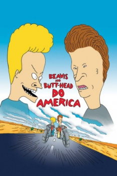
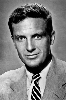

Country:United States, 80 minutes
Spoken languages:
Genres:Animation, Comedy
Director(s):Mike Judge
Writer(s):Joe Stillman, Mike Judge
Video Codec:Unknown
Number: 1867


Certification:PG-13
Storyline:
Mike Judge's slacker duo, Beavis and Butt-Head, wake to discover their TV has been stolen. Their search for a new one takes them on a clueless adventure across America where they manage to accidentally become America's most wanted.
Cast: 

Medium: Original DVD,
Loaned: No
Aspect ratio: Unknown